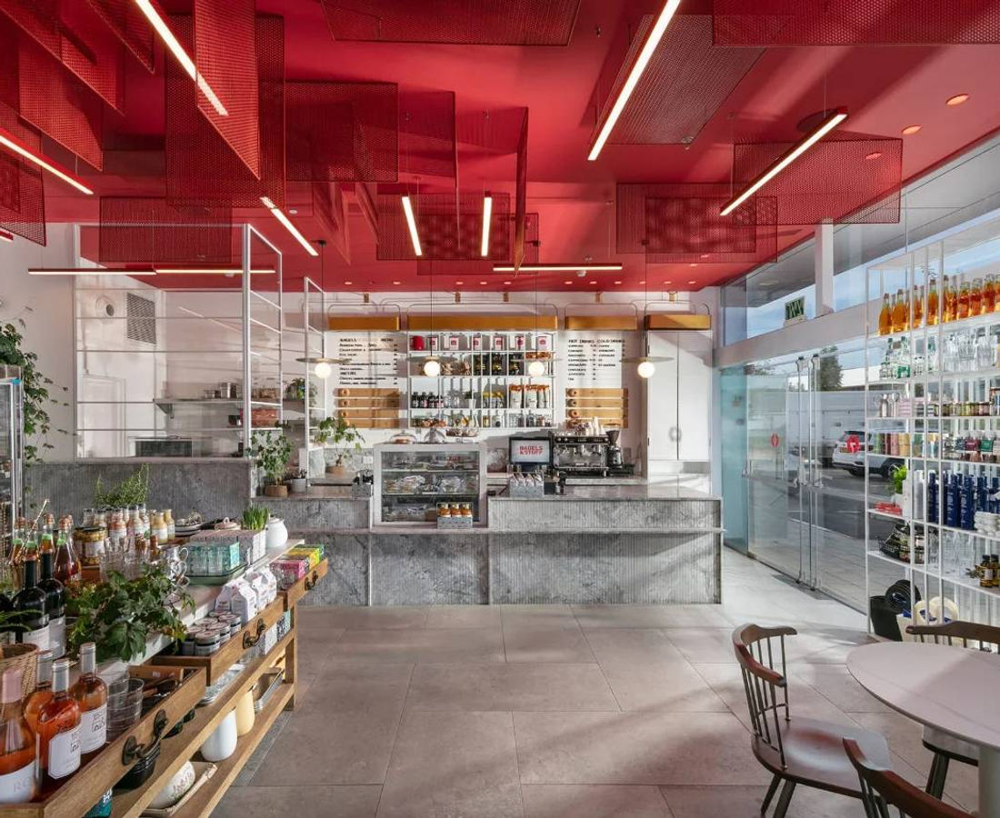
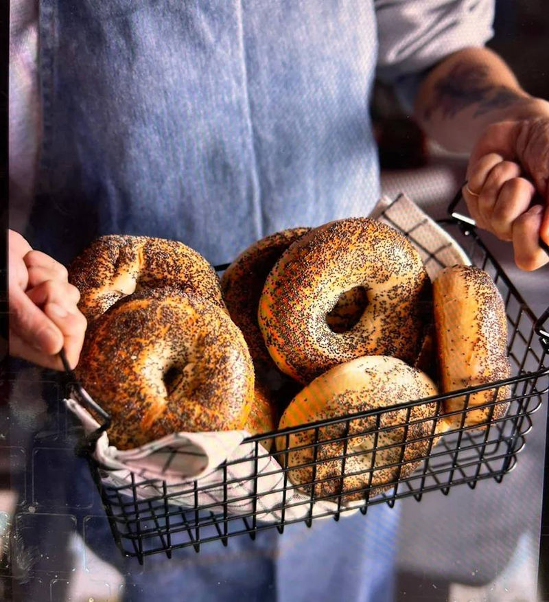
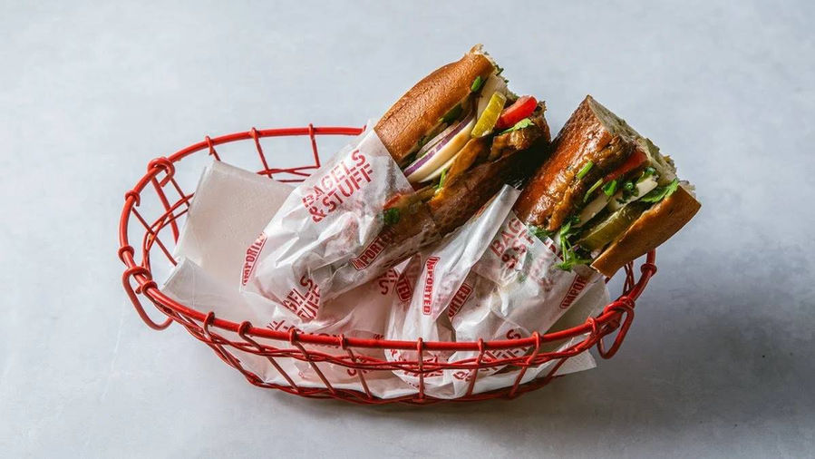
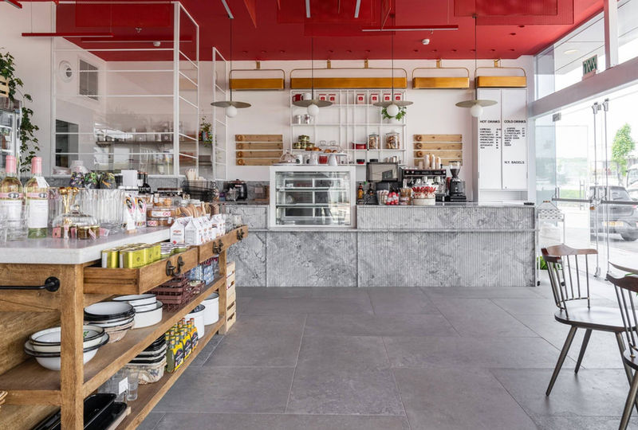
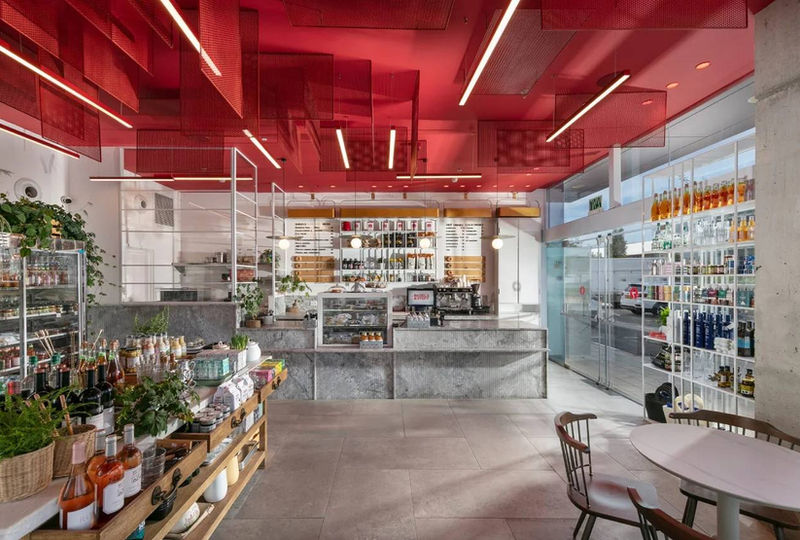
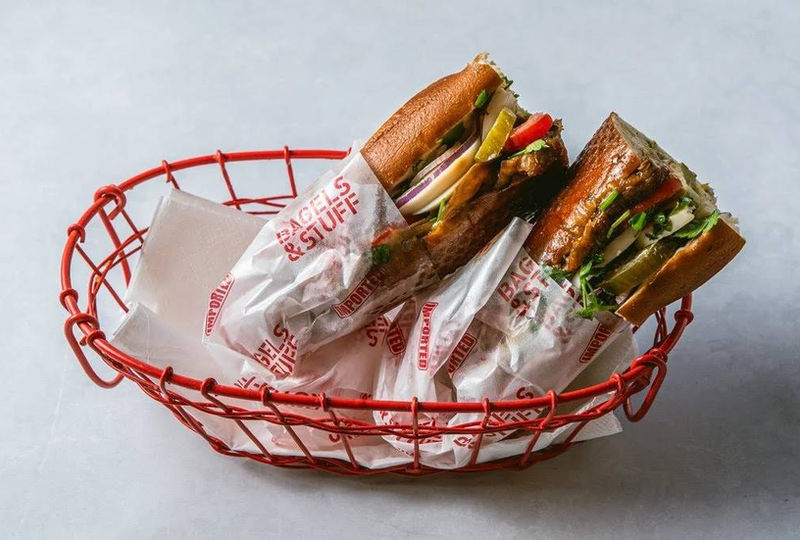
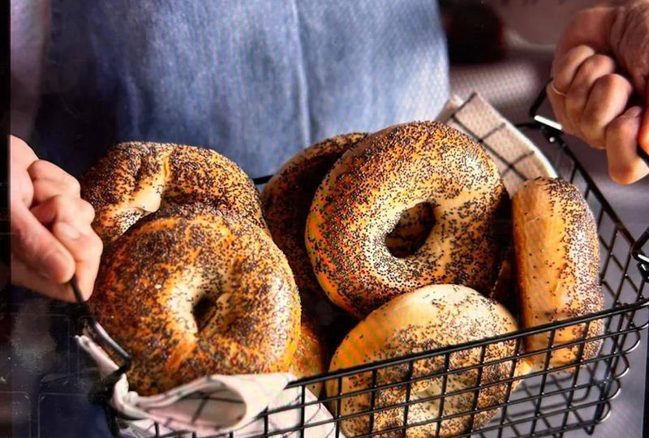

קפה דלי בכפר סבא
בייגל ניו יורקי אמיתי ועוד דברים טובים.
בייגלים, כריכים, קפה ומרכולת גורמה בזאב בלפר 19 כפר סבא.
להזמנה בוולט (נפתח בלשונית חדשה)

הסיפור
בייגלים כמו שצריך
בית קפה-דלי יחודי המתמחה בבייגלס המיובאים מניו יורק, מבושלים ואפויים, ובהשלמת אפייה הם מוגשים טריים בדיוק כמו ב Delis בברוקלין או מנהטן, קפה משובח ומוצרי מכולת גורמה. מחכים לכם עם טייק אווי, משלוחים, או ישיבה באווירה חמה. כי אוכל טוב זה לא רק טעם–זו חוויה.
ברשתות
עקבו אחרינו
הצטרפו אלינו גם בפייסבוק ובאינסטגרם.

רוצים לקפוץ לבקר, לקחת לדרך או שיגיע עד אליכם?
מוזמנים תמיד לבוא לשבת איתנו או לאסוף בכיף, ואם מעדיפים משלוח, אנחנו במרחק קליק ב-Wolt.
להזמנה בוולט (נפתח בלשונית חדשה)גלריה




מוצאים אותנו
זאב בלפר 19, כפר סבא
| ראשון עד חמישי | 8:30 עד 16:00 |
|---|---|
| שישי | 8:30 עד 14:00 |
| שבת | סגור |
טלפון: 09-833-4830